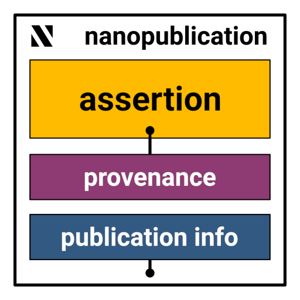

Nanopublications: Small Package, Big FAIR Impact
- Modified
Slideshow by Tobias Kuhn (Knowledge Pixels / VU Amsterdam).
FAIRagro Talk series — 1 June 2026, online. Press F for full-screen slide mode, Esc to return to outline.
 Nanopublications: Small Package, Big FAIR Impact
Nanopublications: Small Package, Big FAIR Impact
Tobias Kuhn
Knowledge Pixels · VU Amsterdam
FAIRagro Talk · 1 June 2026
What are nanopublications?
- Smallest unit of attributable, structured knowledge
- Three graphs: assertion, provenance, publication info
- RDF, content-addressed, digitally signed
- nanopub.net

🙏 Thank you
Questions?
Tobias Kuhn · tobias@knowledgepixels.com · @tkuhn@mastodon.social